Sete dias de pedra, sol e gelatos entre o Vaticano, Aventino, Orvieto, Via Appia e missa no Panteão.
26 DE ABRIL — 2 DE MAIO · MMXXVI
Áudio gravado em 2 de maio, última noite em Roma. Edição preserva o formato de diálogo entre Fernanda e João, com limpeza de repetições e reorganização cronológica.
DIA UM
Domingo, 26 de abril — Chegada
Prati, o rio e o Castel Sant'Angelo
JOÃOA gente chegou domingo. Eu já estava em Londres, você veio do Brasil. A gente se encontrou no aeroporto — você chegou uma hora e meia antes de mim, mais ou menos. Aí pegamos um ônibus. A gente teve que correr um pouco porque foi para o lado errado primeiro, mas depois achou o ônibus certo e deu tudo certo.
FERNANDAEu lembro que passei muito fácil pela imigração. Achei que ia ser bem difícil. Foi bem de boa, ninguém me perguntou nada.
JOÃOO meu também foi bem de boa. A gente correu para o ônibus, entrou, e foi deixado em algum lugar que eu não me lembro direito — porque a gente já estava aprendendo sobre Roma. Você assistiu uns vídeos sobre Roma no avião, inclusive. Eu não assisti.
JOÃOE aí chegamos no primeiro hotel, o Melini, que ficava em Prati — o bairro perto do Vaticano, na beira do rio.
FERNANDAA gente achava que ia ter saída direto para o rio. Aí descobriu que não.
JOÃOTinha uma obra chata. E o rio fica embaixo da cidade, não em nível, então é um pouco mais complicado. Mas foi ok.
Tarde livre: Castel Sant'Angelo
JOÃOA gente tinha a tarde livre, então usou para caminhar. Acho que ainda no primeiro dia a gente foi no Castel Sant'Angelo.
FERNANDAA gente estava com disposição.
JOÃOAlmoçamos num fast food italiano na praça em frente à Suprema Corte — um prédio meio feioso, mas elegante ao mesmo tempo. Era diferente, gostoso na verdade, mas fast food.
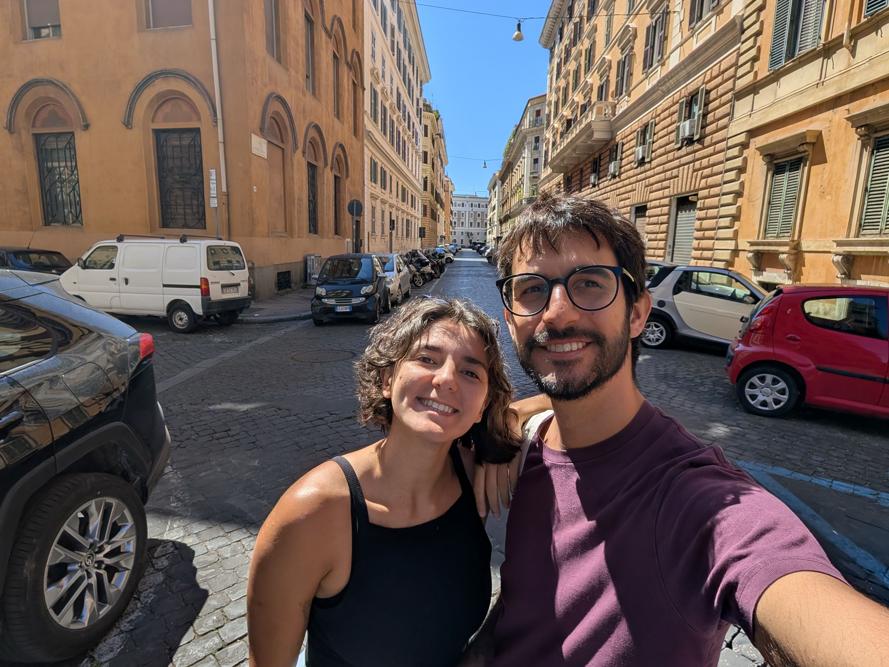
Piazza Cavour · Prati · 26 abr · 14h29
JOÃOE a gente ficou bem maravilhado com o rio. A vista da Basílica, o próprio Castel Sant'Angelo e a ponte dos muitos anjos, que só passa pedestre. Muito bonito. Bem impressionante.
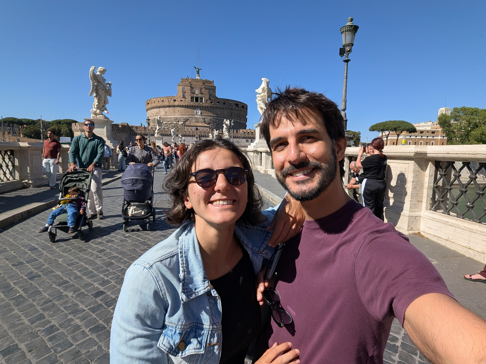
Ponte Sant'Angelo · "a ponte dos muitos anjos" · 26 abr · 16h09
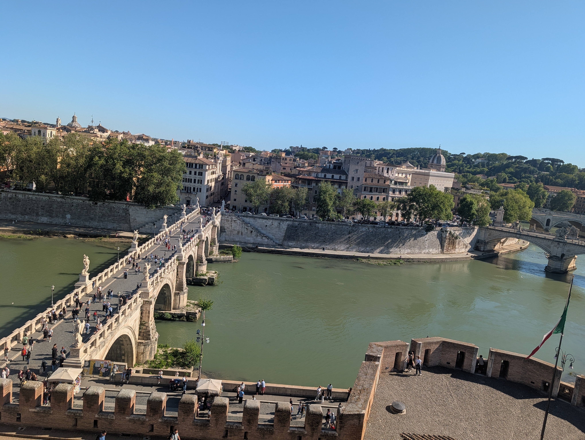
Castel Sant'Angelo · interior · 26 abr · 16h49
Antes de entrar no Castel Sant'Angelo, usamos IA para entender o que estávamos prestes a ver. O prédio foi construído por Hadriano entre 123 e 139 d.C. como mausoléu imperial — originalmente revestido de mármore branco, com um cone de terra plantado de ciprestes no topo e uma quadriga de bronze com a estátua do próprio imperador. As cinzas de Hadriano e de imperadores seguintes, incluindo Marco Aurélio e Caracalla, ficaram lá depositadas. A transformação em fortaleza papal começou na Idade Média, e o nome "Castel Sant'Angelo" vem de uma visão do Papa Gregório Magno em 590 d.C.: ele teria visto o Arcanjo Miguel desembainhando a espada no alto do edifício, sinalizando o fim de uma peste devastadora. A estátua de bronze que coroa o castelo até hoje comemora exatamente esse momento. A rampa helicoidal interna — por onde subimos — é a rampa original romana que transportava as urnas funerárias dos imperadores. O Passetto di Borgo — o corredor elevado que conecta o castelo ao Vaticano, visível lá do topo — foi construído em 1277 para fuga papal em caso de perigo. O Papa Clémente VII o usou em 1527, durante o Saque de Roma pelas tropas de Carlos V, correndo de róbido enquanto a cidade ardia embaixo dele. O artista e aventureiro Benvenuto Cellini afirmou ter disparado o canhão que matou o comandante inimigo nesse mesmo episódio — e depois foi preso no próprio castelo duas vezes, escapando numa vez por uma corda de lençóis e quebrando a perna na queda. Os dez anjos da Ponte Sant'Angelo foram desenhados por Bernini em 1668 e cada um segura um instrumento da Paixão de Cristo. Os dois que o próprio Bernini esculpiu foram considerados belos demais para ficar expostos ao tempo — o Papa os guardou em interior, e as versões que vimos na ponte são cópias. Os originais ficam na Igreja de Sant'Andrea delle Fratte.
FERNANDAFoi o dia que a gente viu a fonte dos quatro rios também?
JOÃOSim, um pouco sem querer essa, na Piazza Navona.
A Piazza Navona foi construída sobre o Estádio de Domíciano, erguido por volta de 85 d.C. para competições atléticas — não gladiatoriais, essas ficavam no Colósseo. O formato oval alongado da praça preserva exatamente o perímetro do estádio, e é possível visitar as ruínas originais embaixo da praça até hoje. A Fonte dos Quatro Rios ao centro é obra de Bernini, concluída em 1651 a mando do Papa Inocente X Pamphilj, cujo palácio familiar ocupa um lado inteiro da praça. Cada figura representa um dos quatro grandes rios do mundo conhecido: o Nilo (África), o Danúbio (Europa), o Ganges (Ásia) e o Rio da Prata (Américas). O obelisco ao centro é egípcio de época romana, originalmente erguido no Circo de Maxêncio — o mesmo trecho que percorremos de bicicleta na Via Appia. A pomba no topo do obelisco é o emblema da família Pamphilj, assim como as lírios eram dos Farnese. A famosa rivalidade entre Bernini e Borromini é encarnada na própria praça: Borromini projetou a Igreja de Sant'Agnese in Agone do lado, e segundo a lenda — provavelmente apócrifa — Bernini esculpiu a figura do Nilo com o rosto coberto para não ter que "ver" a fachada do rival. A história de como Bernini conseguiu a encomenda também é notável: Inocente X havia explicitamente o excluído da concorrência por ser favorito do papa anterior. Bernini então mandou um modelo em prata da fonte para ser colocado onde o Papa o encontraria por acaso. Ao vê-lo, Inocente X teria dito: "A única maneira de resistir às obras de Bernini é não as ver." E deu a encomenda.
JOÃOJantamos num lugar meio escondidinho em Prati, que tinha ótimos reviews mas ficava numa esquina meio escondida. Foi o primeiro jantar nosso, se não me engano.
JOÃONo segundo dia a gente correu, mas não de manhã. Era meio frio. E o hotel não tinha café da manhã.
FERNANDANão tinha.
JOÃOA gente queria aproveitar que estava perto do Vaticano. Mas o tour era à tarde, então de manhã foi no Panteão.
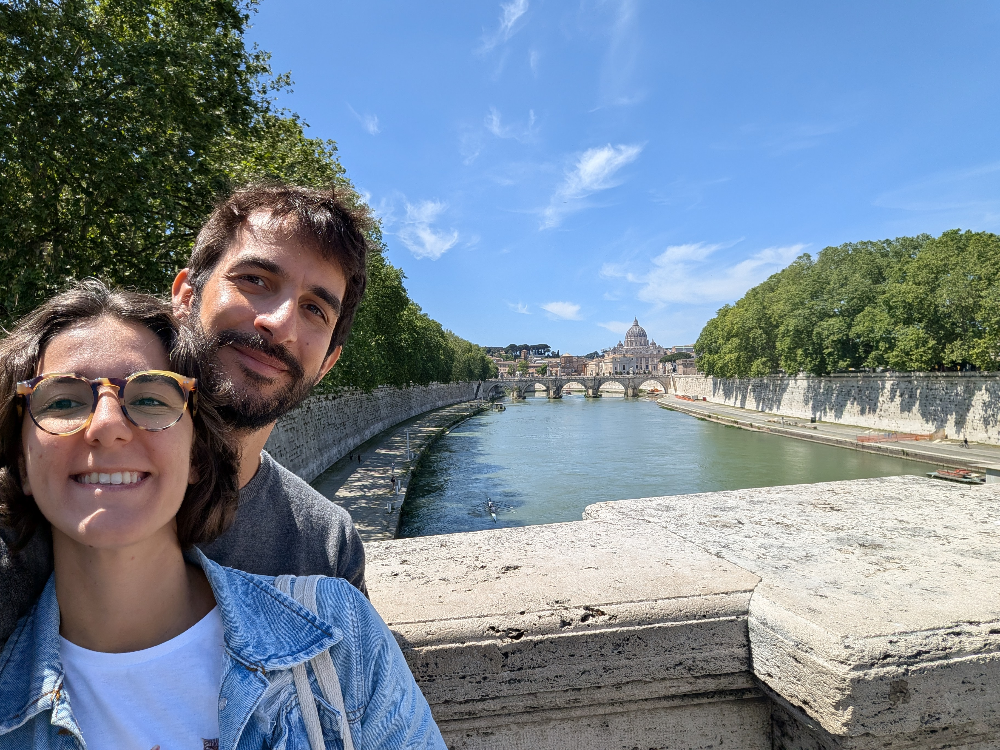
Ponte Umberto I · Tibre e cúpula de São Pedro ao fundo · 27 abr · 12h57
Panteão
JOÃOO Panteão foi incrível.
FERNANDABizarro. Do nada você vira uma esquina e, pá, tem um prédio dessa arquitetura.
JOÃOUm dos prédios mais antigos da história, ainda em uso.
FERNANDAParece muito que é um cenário que colocaram ali.
JOÃOA gente gostou tanto que voltou outro dia para ir na missa — mas isso foi muito depois.
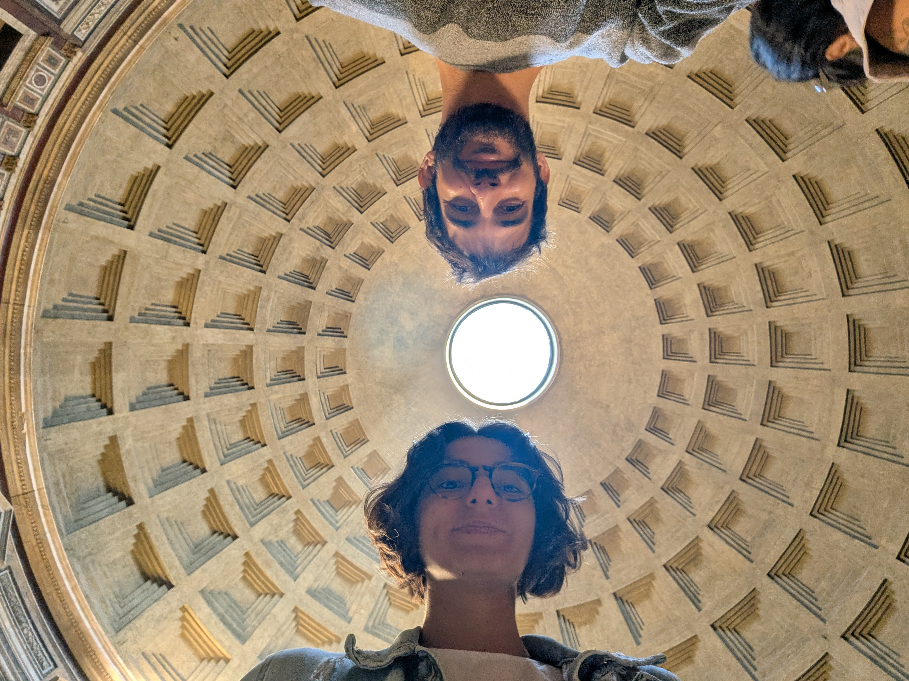
Panteão · 10h44
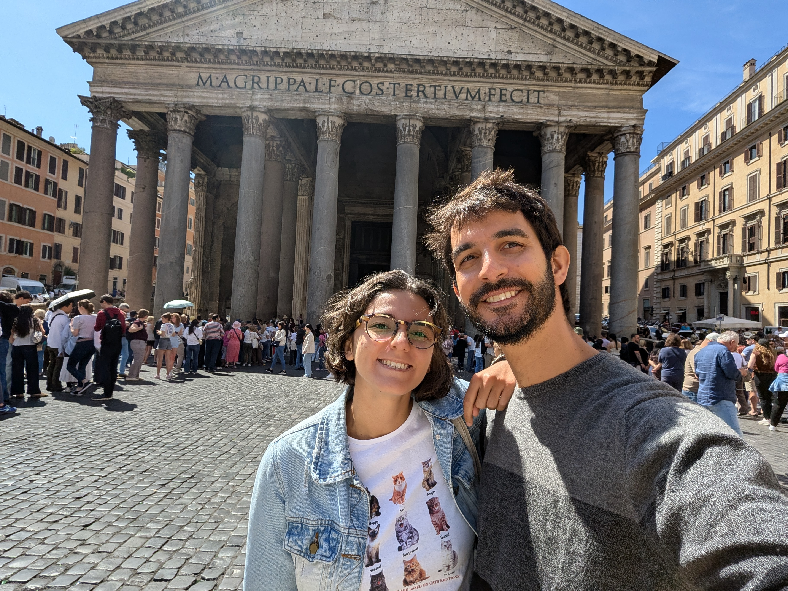
Piazza della Rotonda · 11h11
O Panteão que visitamos é de Hadriano, construído entre 118 e 125 d.C. — o mesmo imperador que ergueu o Castel Sant'Angelo. Hadriano manteve a inscrição de Agrippa na fachada por modestia política, o que confundiu historiadores por mais de 1.700 anos, até que carimbos de tijolos nas paredes revelaram a data real de construção no século XIX. O interior encerra uma esfera perfeita de 43,3 metros de diâmetro — a mesma medida em largura e altura —, um princípio geométrico que representa o cosmos. O cóncavo que vimos no teto é feito de concreto romano (opus caementicium) com agregados progressivamente mais leves conforme sobe — travertino na base, tufo vulcânico no meio, pómice no topo — uma solução de engenharia que só seria formalmente compreendida na modernidade. O concreto romano é feito com cinza vulcânica de Pózzóli (pozzolana), que ao reagir com a água ao longo dos séculos forma novos cristais minerais que fortalecem a estrutura — ao contrário do concreto moderno, que se degrada. O Panteão está, em certo sentido, ainda se consolidando depois de 1.900 anos. O piso que pisamos é original, com mármores de todo o Império: o pórfiro vermelho escuro vinha de uma única pedreira no Egito e era reservado exclusivamente ao imperador. Os 22 ralos no piso que vimos — com tampas de bronze originais — drenam a chuva que entra pelo óculus, o buraco aberto de 9 metros no topo da cúpula. Não há vidro: chuva, vento e, ocasionalmente, neve entram livremente há quase dois milênios. O túmulo de Rafael Sanzio fica na terceira hornacina à esquerda da entrada. Ele pediu para ser enterrado ali porque considerava o Panteão o maior edifício já construído. Morreu aos 37 anos, no dia do seu aniversário, em 1520 — uma Sexta-Feira Santa. A inscrição no túmulo, escrita pelo humanista Pietro Bembo, diz: "Aqui jaz Rafael, diante de quem a Natureza temeu ser superada enquanto ele vivia, e quando ele morreu, temeu também morrer." O edifício foi salvo da demolição e da saqueagem medieval porque o Papa Bonífacio IV o consagrou como igreja cristã em 609 d.C. — e o interior perfeito que vimos é fruto direto dessa decisão. A fachada furada que fotografamos por fora é o oposto: o exterior não era espaço sagrado, e o mármore que o cobria foi progressivamente removido ao longo dos séculos para construir outras igrejas e palácios. O Papa Urbano VIII Barberini retirou cerca de 450 toneladas de bronze do teto do pórtico em 1625 para fundir canhões e o baldíquino de Bernini na Basílica de São Pedro — ato que gerou o dito romano: "O que os bárbaros não fizeram, os Barberini fizeram."
Vaticano
JOÃOFoi um pouquinho corrido ir pro Vaticano, porque fomos correr antes pelo rio - lindo! A gente pegou um patinete para chegar mais rápido.
A caminho do Vaticano · 13h41
JOÃOAlmoçamos perto do Vaticano, num lugar que super podia ser pega-turista, mas não era. Era bom.
FERNANDATinha uma cortina, e o cara meio que entregava as coisas pra gente pela cortina. Era engraçado.
JOÃOCortina na rua, para proteger do sol. Bem na esquina do Vaticano.
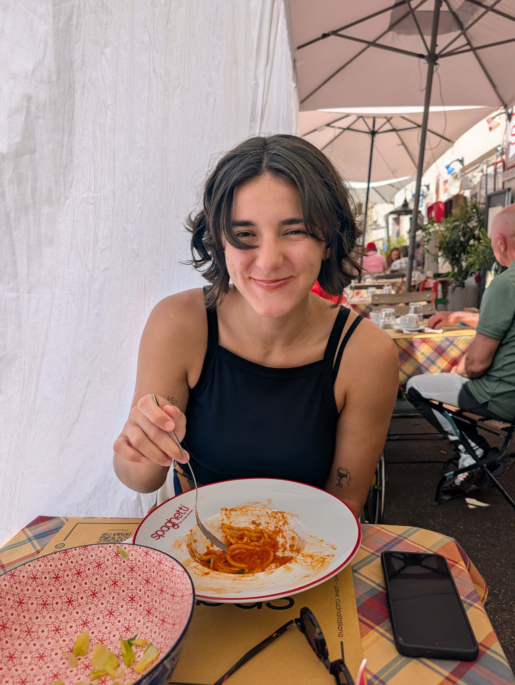
Minha namorada linda suja de molho de tomate · Borgo Pio · 15h17
FERNANDAA gente tinha tipo 10, 15 minutos. Bem rápido. E uma fila gigante no Vaticano — a gente ultra preocupado.
JOÃOMas a gente passou todo mundo, porque tinha o tour guiado.
FERNANDAFoi muito legal. Uma moça polonesa. Bem simpática.
JOÃOA gente viu muitas coisas lá dentro. É um pouco corrido e muito, muito cheio. Algumas coisas eu queria ter visto com mais calma.
FERNANDAÉ um país inteiro, né? O Vaticano. Então você vê boa parte dele. Descobrimos que os jardins são tipo metade do Vaticano. Eles têm muitas obras de arte, pinturas, de tudo quanto é tempo e lugar. Mostra o poder da Igreja Católica.
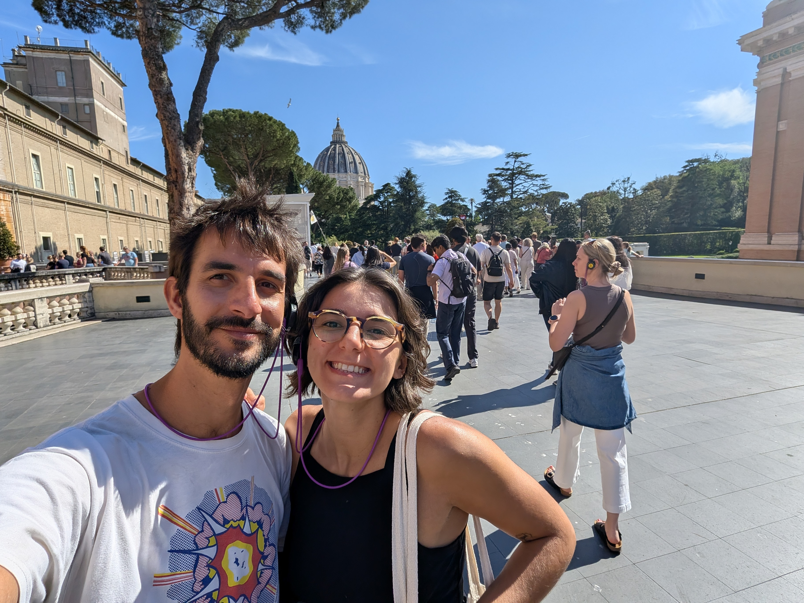
Museus Vaticanos · galerias · 16h05
JOÃOA gente viu a Escola de Atenas, que já tinha visto em vídeos do YouTube — legal ver ao vivo.
FERNANDAMuitos homens nus nas paredes. E vários papas ficaram revoltados com isso.
JOÃOInclusive na Capela Sistina, onde a gente tirou fotos clandestinas.
QUEDA DO IMPERIO ROMANO · 16h59ESCOLA DE ATENAS · 17h11
FERNANDAE vimos órgãos genitais cobertos posteriormente por pintores contratados pelos papas — especialmente nas coisas do Michelangelo. Descobrimos que o Michelangelo demorou cinco anos para pintar o teto da Capela Sistina.
JOÃOQue o Rafael entrou lá escondido, ficou muito inspirado, e pôs o Michelangelo dentro da Escola de Atenas, a posteriori.
FERNANDAE que o Michelangelo ficou bem doente depois disso. Faz muito sentido.
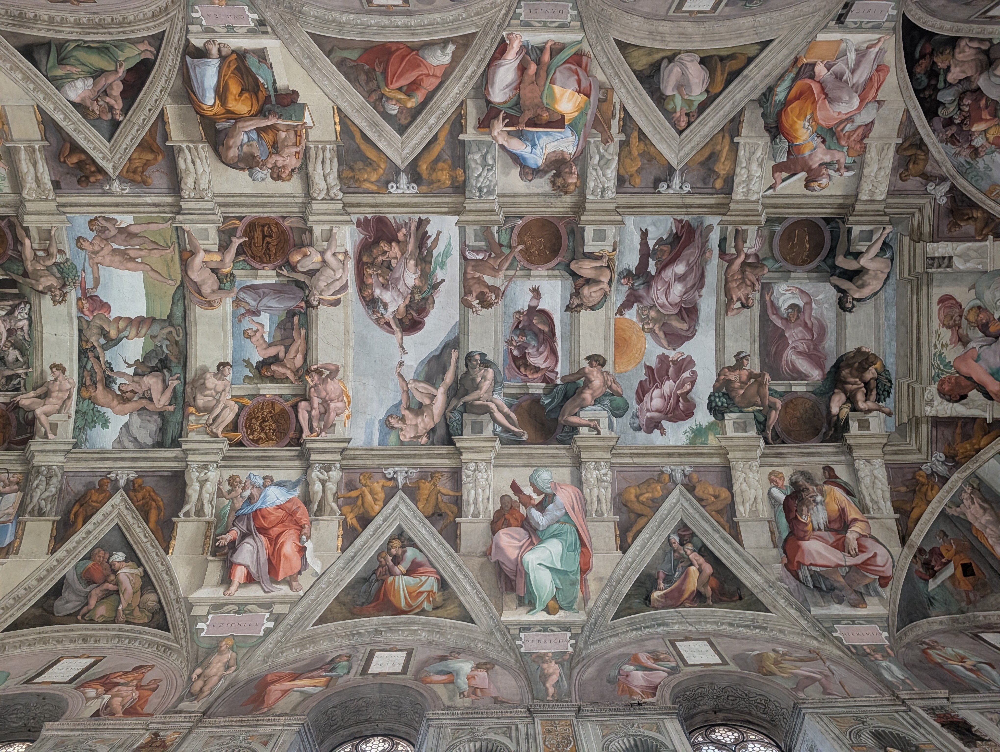
TETO CAPELA SISTINA · 17h41
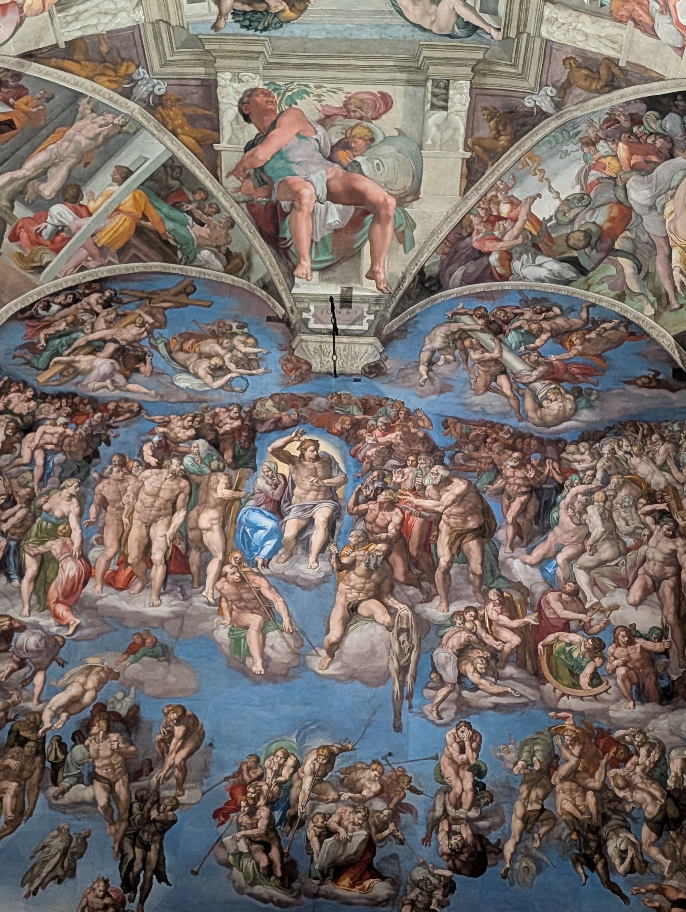
ULTIMO JULGAMENTO · 17h46
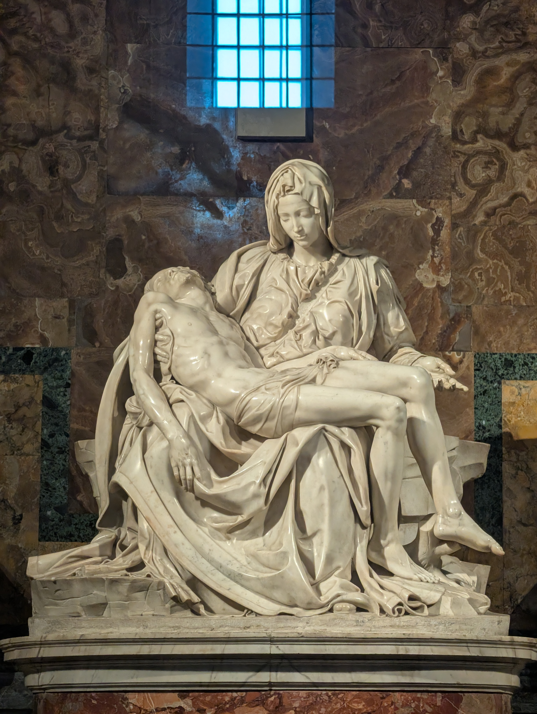
PIETA (MICHELANGELO) · 18h37
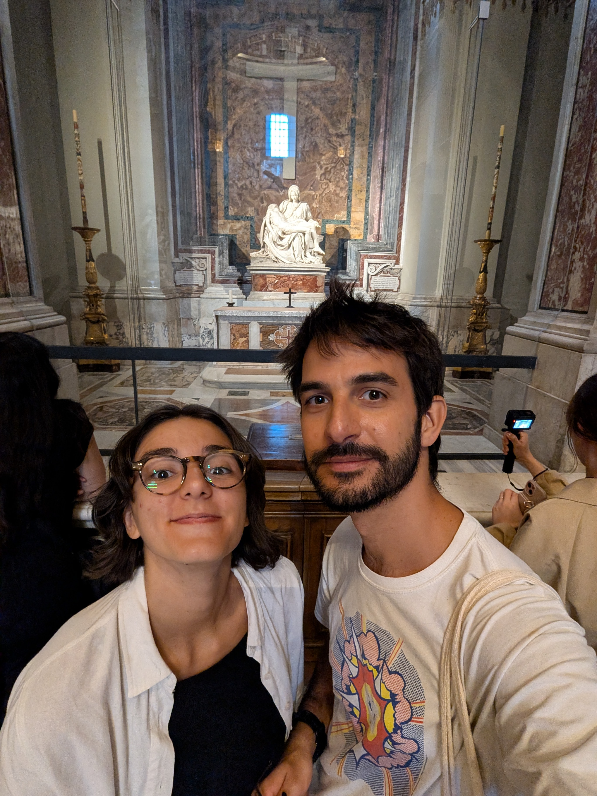
NÕS + PIETA · 18h39
Saindo do Vaticano · 19h04
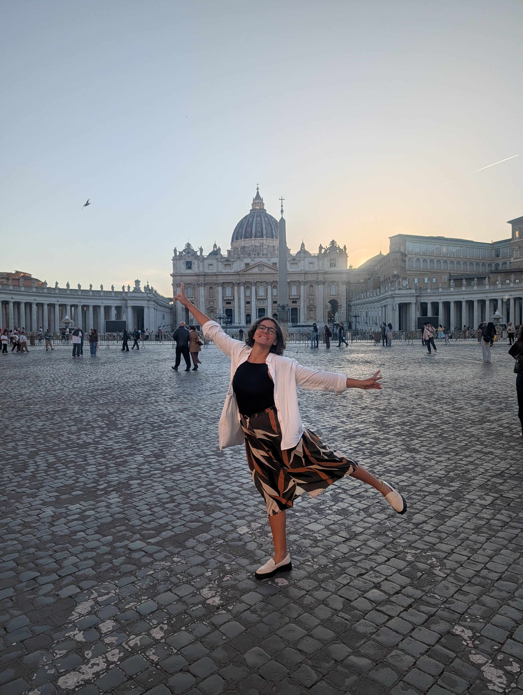
Via della Conciliazione · 19h15
Jantar no centro histórico
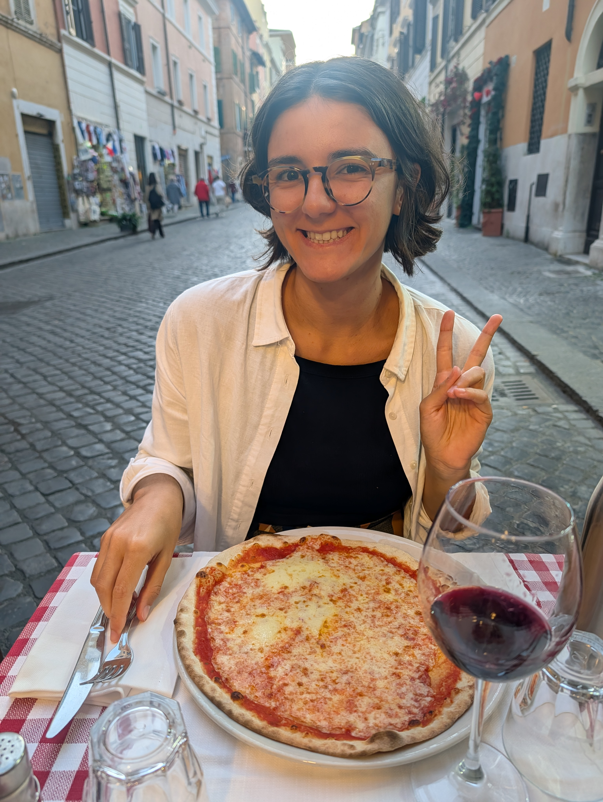
Jantar no centro histórico · 19h48
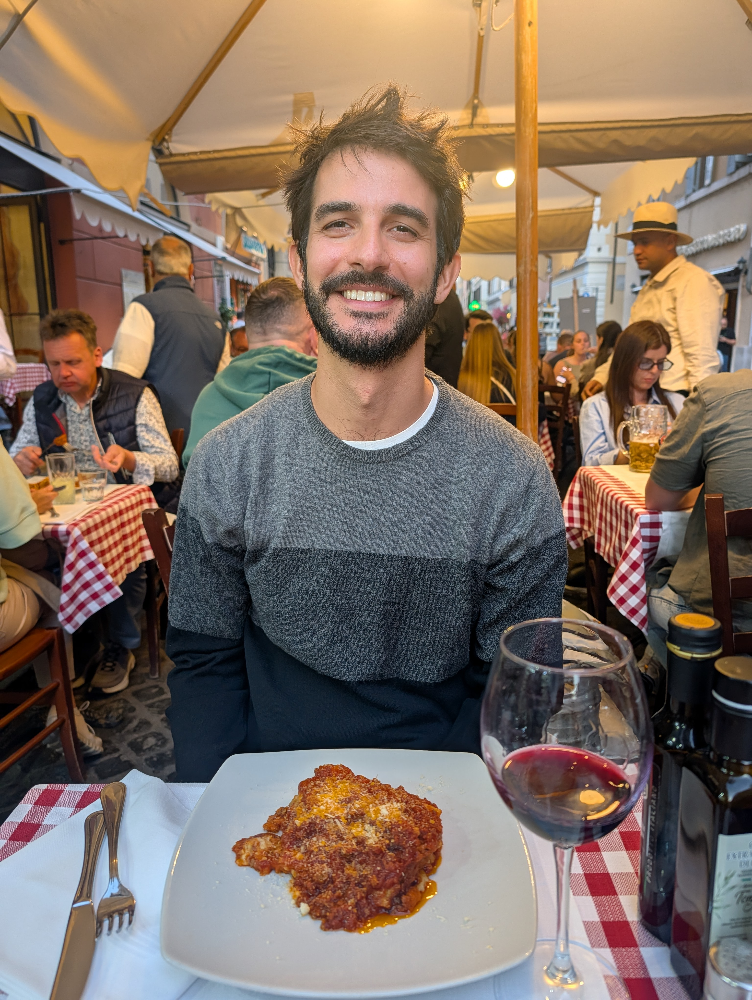
19h49
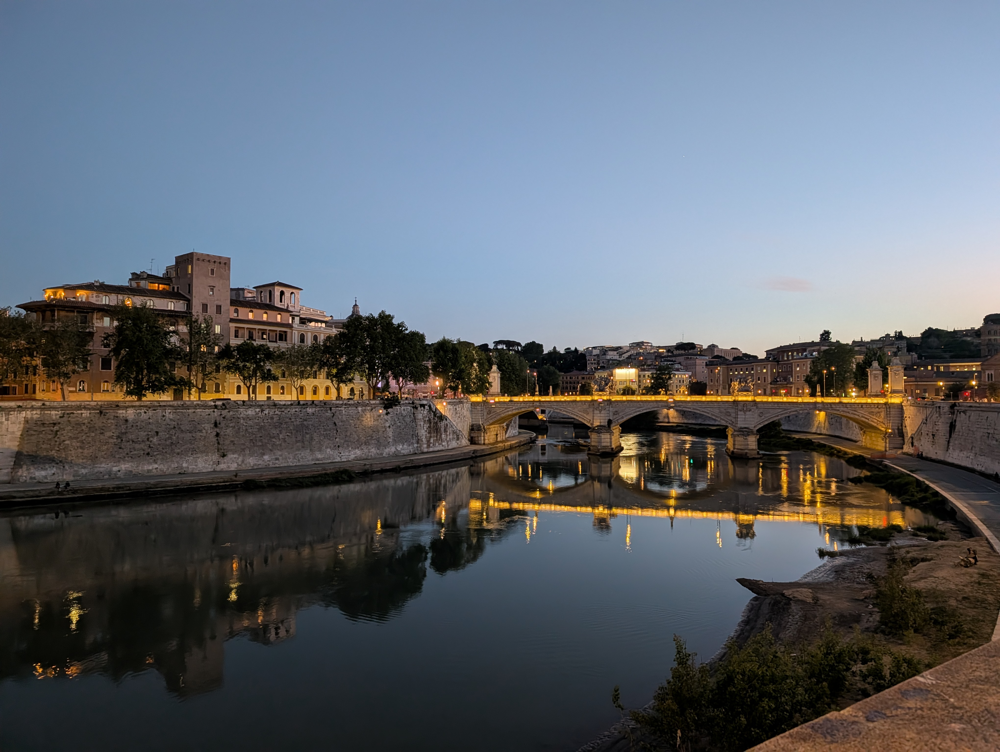
Ponte Sant'Angelo · de volta a Prati · 20h31↑ TOPO
DIA TRÊS
Terça-feira, 28 de abril — Saída do Meline, Aventino, pôr do sol no Garibaldi
Cinco minutos para sair, golden hour no Janículo
JOÃONa terça a gente teve uma manhã mais corrida, na verdade. Foi a correria para sair do Melini.
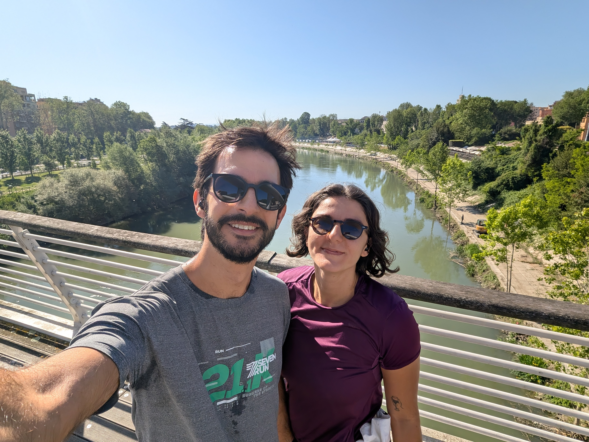
Corrida pré-check out · 09h37Corrida pré-check out · 09h48
FERNANDAA gente correu, voltou, chegou no hotel — e a mulher estava emburrada na porta, esperando a gente sair.
JOÃOA moça da limpeza já estava bem brava. A gente falou "cinco minutos". E aí, em cinco minutos, nós dois tomamos banho e arrumamos a mala. Bastante impressionante. Ela também ficou impressionada — sorriu depois, porque não acreditava que tinha dado certo.
JOÃOTomamos café num lugar meio francês, pertinho do Melini. E aí fomos para Trastevere, fizemos o check-in no nosso excelente hotel — onde ficamos até a última noite. San Cosimato 40.
Aventino
JOÃOÀ tarde fomos finalmente para o Aventino. E aí a gente ficou perdido — quer dizer, perdido não, ficou muito tempo numa fila totalmente ridícula.
FERNANDAPra galera, ao invés de olhar pela fechadura do portão. É uma maneira que você consegue ver o Vaticano, a Basílica, tudo meio que numa só vista. Todo mundo parava ali na frente para fazer exatamente o mesmo vídeo. Bem irritante.
JOÃOA gente não tirou foto disso, porque era ridículo. Mas eu tirei foto da fila, que era enorme. Depois a gente se arrependeu de ter ficado tanto tempo lá.
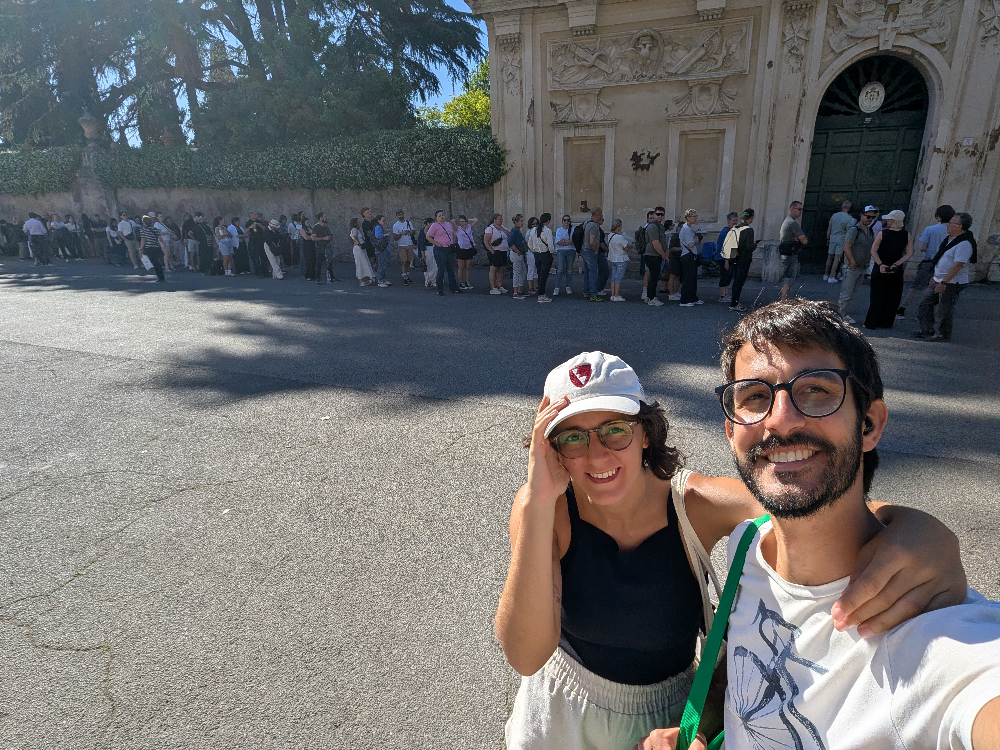
Buraco da Fechadura dos Cavaleiros de Malta · Aventino · 16h55
FERNANDANa avenida do lado tinha um parque com várias laranjeiras. Bem agradável.
JOÃOFoi meia hora na fila, pelo menos. Absurdo.
FERNANDAMas o sol já estava lindo na hora que a gente sentou lá.
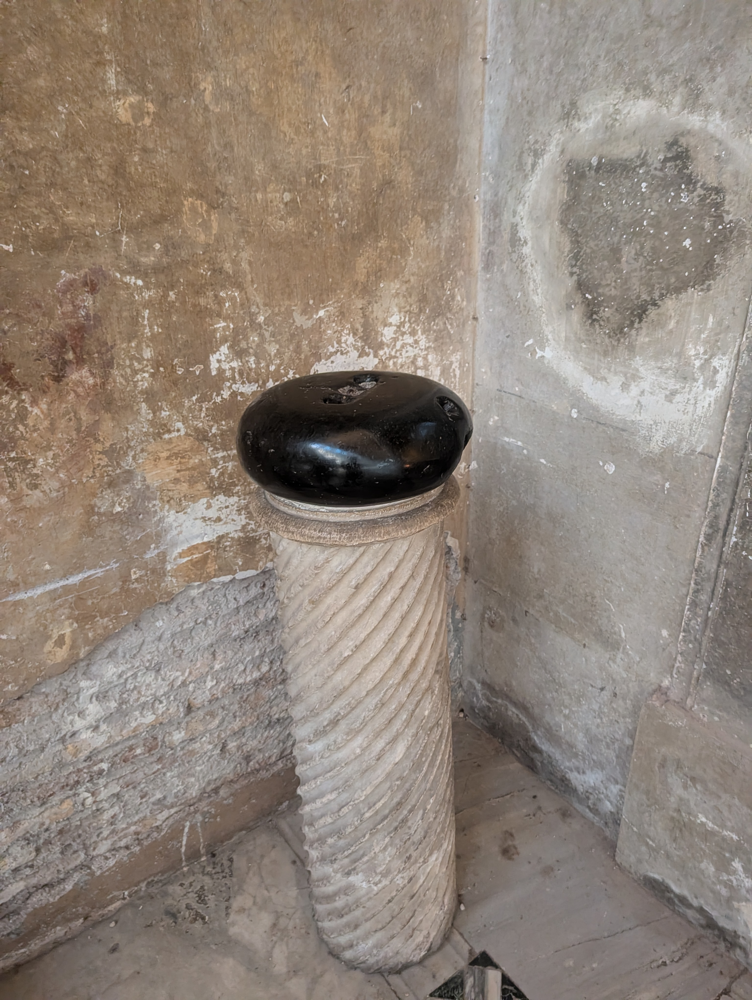
Giardino degli Aranci · 17h31
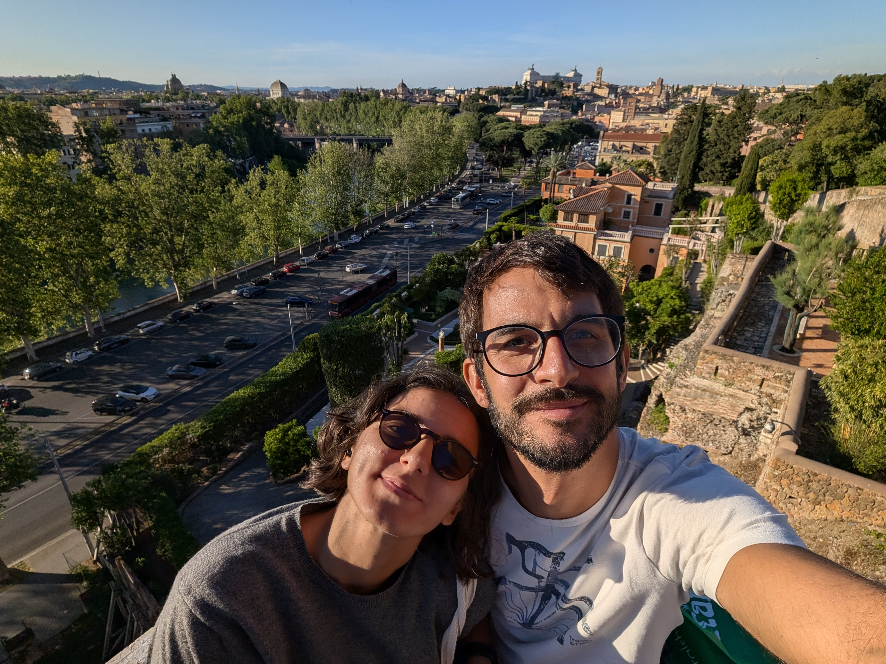
Aventino · 18h37
Ao lado do Giardino degli Aranci, na Basílica de Santa Sabina, fica uma pedra negra associada a uma lenda medieval: enquanto São Domingos rezava ali no século XIII, o demônio teria lançado essa pedra contra ele. As marcas visíveis no topo seriam os sinais do impacto. A história é simbólica, não um registro histórico verificável, mas o objeto virou parte da memória do lugar e da tradição dominicana em Roma.
Pôr do sol no Garibaldi
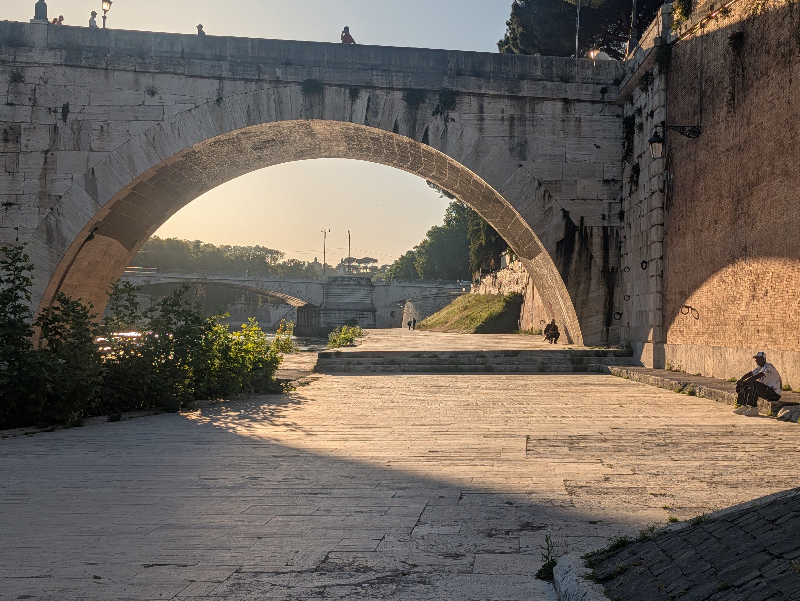
Descida do Aventino · Foro Boario · 19h07
JOÃODepois fomos ver o pôr do sol na estátua do Garibaldi. Muito, muito, muito bonito. Bem impressionante a cor. Golden hour total. Muito lindo.
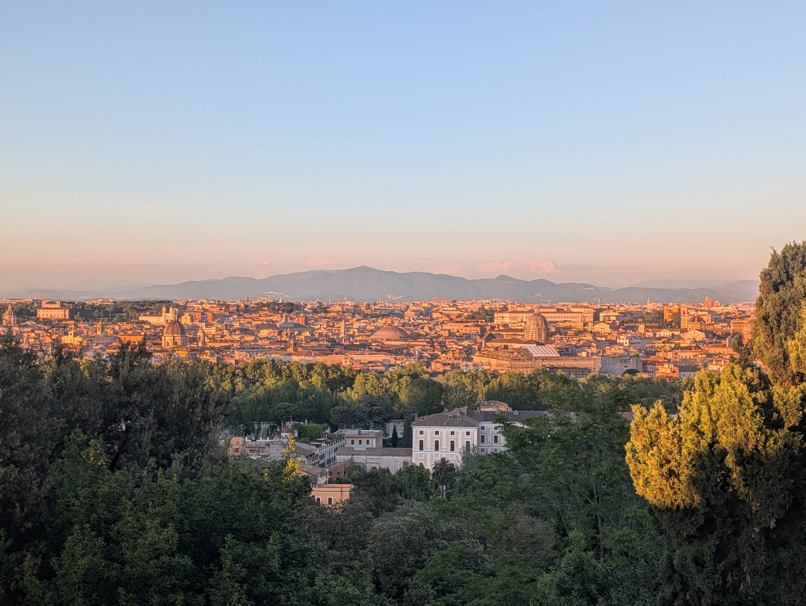
Monumento a Garibaldi · Janículo · golden hour · 19h40
JOÃOJantamos em Trastevere — do lado do nosso hotel, em um lugar coreano MUITO bom! (Pausa da comida italiana)
Quarta-feira, 29 de abril — Fórum, corrida pelo Coliseu, gueto judaico
Cícero, damnatio memoriae, e a corridinha
JOÃOO plano original era Fórum Romano, depois Mercado Testaccio, depois Gueto Judaico. A gente acabou não fazendo exatamente isso.
JOÃOA gente foi no Fórum com o ingresso do Coliseu, que comprou em cima da hora — e que só tinha pouquíssimos dias disponíveis. Inclusive isso fez a gente mudar os planos: antes íamos para Tivoli ou Orvieto neste dia, mudamos.
JOÃOA gente viu vários vídeos no YouTube na noite anterior, com reconstrução por IA, mostrando como era o Fórum. Foi muito legal ver ao vivo. Ficamos um tempo maior do que eu imaginava por lá. Bem bonito.
Fórum Romano · 11h33
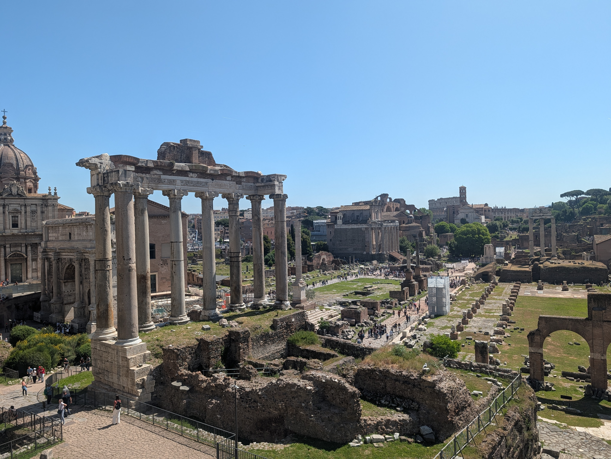
núcleo central · 11h36
Durante a visita ao Fórum, a inscrição num busto de mármore com o rosto completamente destruído chamou atenção: era Múrcio Túlio Cícero, o maior orador de Roma, identificado pela inscrição "M·CIC" na base. A destruição do rosto não foi acidente: era prática romana de damnatio memoriae — a condenação da memória de inimigos. Cícero foi mandado matar por Marco Antônio em 43 a.C., e diz a história que a esposa de Antônio, Fúlvia, cravou uma agulha de cabelo na língua decepada de Cícero — último ato de vingança contra a boca que o havia atacado nos famosos discursos das Filípicas. Sem Cícero, a prosa latina como modelo para o pensamento europeu — do direito romano à Constituição americana — simplesmente não existiria da forma que conhecemos. Ver o busto mutilado dentro do Castel Sant'Angelo — fortaleza do tipo de poder que ele passou a vida inteira combatendo — foi um dos encontros mais carregados de ironia da viagem.
Corrida pelo centro antigo
JOÃOA gente decidiu que ia correr. Foi lá no Fórum, depois no Circo Máximo, deu uma volta no Coliseu — tudo isso correndo. E voltou para casa passando pelo Jardim de Rosas. Foi a nossa corridinha.
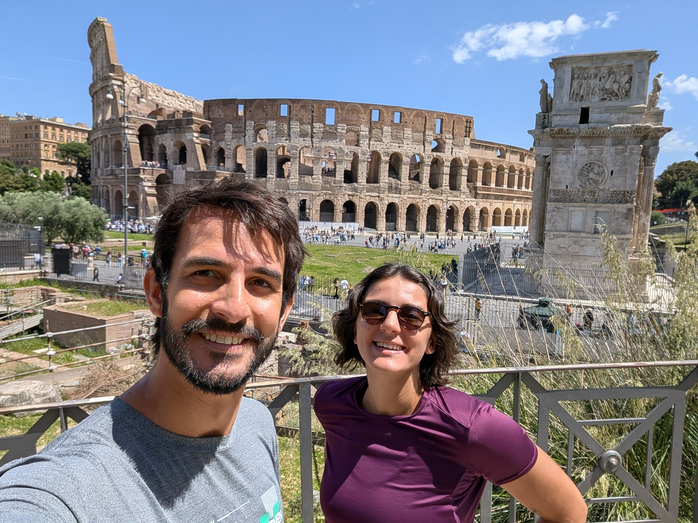
Arco de Constantino · entorno do Coliseu · 13h12Volta ao Coliseu correndo · 13h21
JOÃOIsso tudo demorou um pouco mais do que o plano. A gente também saiu mais tarde do hotel pra dormir direitinho. Então não fomos no Mercado Testaccio, onde teoricamente íamos almoçar — almoçamos por Trastevere mesmo. E à tarde fomos no Gueto Judaico.
JOÃOA gente tinha ingresso para o Coliseu mas não foi. Desencanou.
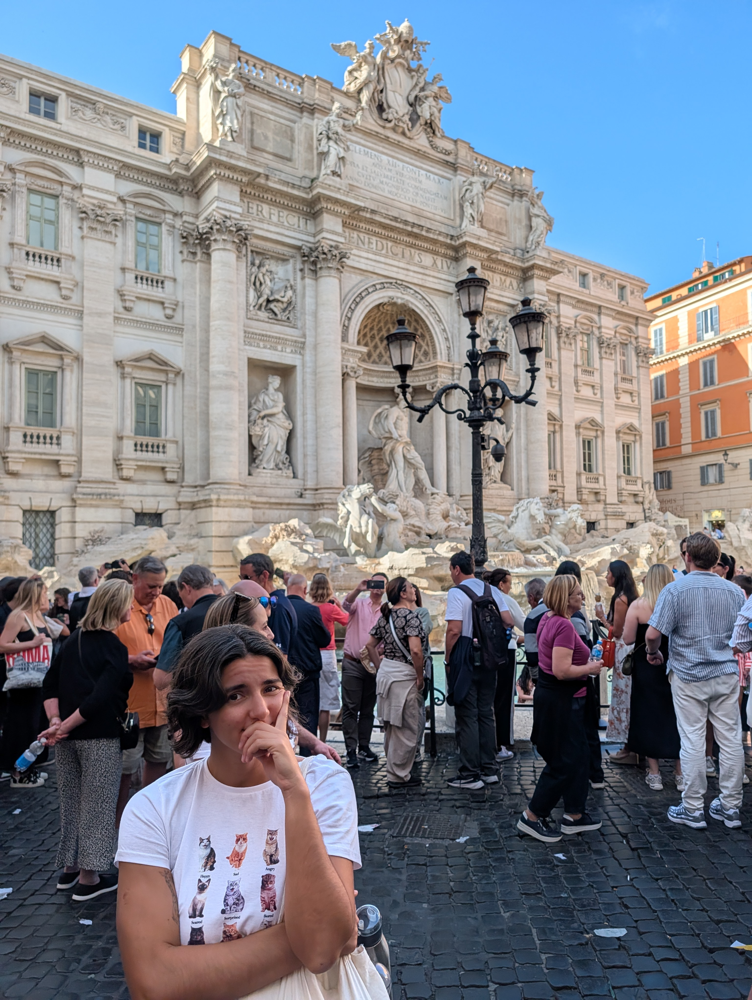
Fontana di Trevi · primeira visita ("desprezível, cheio de gente") · 17h40
Vilazinha italiana, cathedral listrada, e o milagre do pão sangrento
JOÃONa noite anterior a gente quase desistiu de ir pra Orvieto, porque era mais tempo no trem do que imaginávamos. Mas acabamos indo.
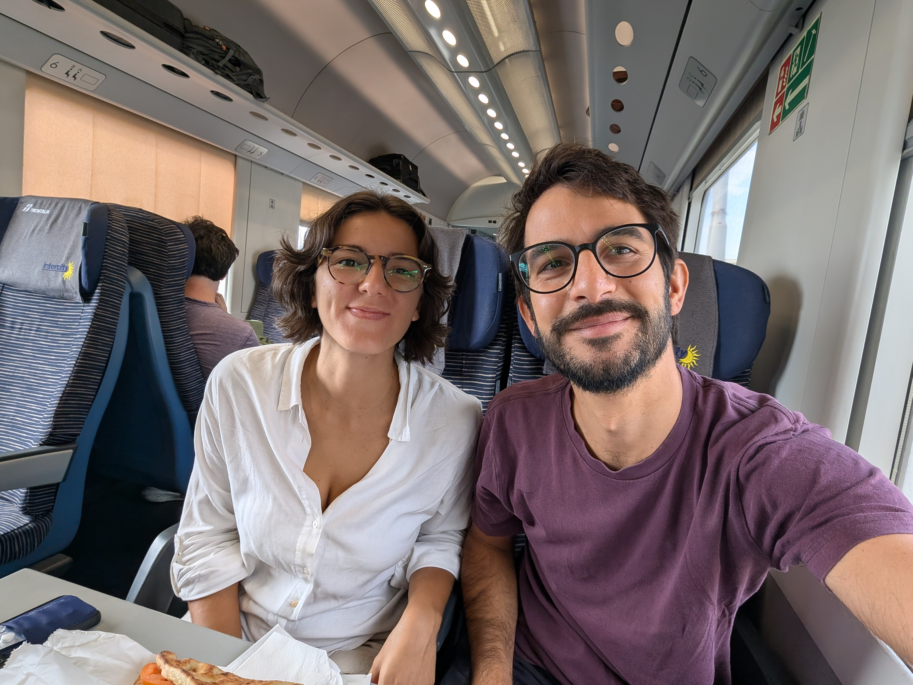
Esquilino · a caminho do trem · 10h25No trem para Orvieto · 11h46
FERNANDAA gente chegou na cidade. Era muito fofinha. Vilazinha, pequena, italiana. Começamos a andar para achar o Orvieto Underground. E aí, do nada, estávamos numa praça gigante que ventava bastante, com muito sol — e a primeira igreja listrada que a gente viu na vida.
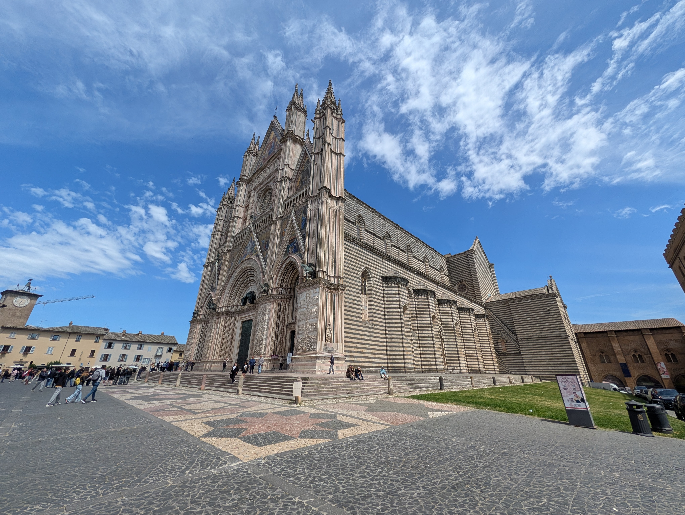
Orvieto · chegada · 12h29Orvieto · centro histórico · 12h43
JOÃOA catedral. A gente tinha perdido o tour reservado, porque decidiu chegar um pouco mais tarde. E não tinha mais horário para o tour logo depois. Então tivemos um tempo grande na cidade antes — almoçamos e visitamos a catedral.
O milagre de Corpus Christi
FERNANDAA gente descobriu, mal sabíamos nós, que aquela catedral tem a ver com o dia de Corpus Christi. Tinha um padre que estava perdendo a fé. Ele ia pregar uma missa, estava com o pão — e daqui a pouco o pão começou a sangrar.
FERNANDAEle entendeu que era um milagre de Jesus Cristo. Foi correndo até o papa, levou o pão sangrando. O papa falou que era de fato um milagre, e mandaram construir uma igreja absurdamente grande, claramente destoante de todo o resto da cidade.
FERNANDALá eles guardam esse pão até hoje. Tem um altar todo fechado pra ele. E essa é a data que a gente celebra Corpus Christi.
JOÃOE a gente descobriu...
FERNANDA...que na verdade era uma bactéria.
Sobre IA na viagem
JOÃOIsso nos leva a um ponto muito importante da viagem como um todo: o uso de IA. Ao longo das visitas, a gente ficava perguntando coisas — tanto antes de chegar no lugar quanto durante. Especialmente usando fotos: a gente tirava foto e botava no Gemini, para não gastar as IAs que são realmente boas. Ajudou muito a ter informações interessantíssimas ao longo da viagem toda.
Underground
FERNANDAO tour foi super legal. Muito doido. A cidade tem, sei lá, 1.200 catacumbas pelo que eles já conseguiram contar até agora. Vários são propriedade privada, alguns abertos ao público. A cidade era utilizada pelos papas e outras galeras como abrigo em momentos de guerra — por isso tinha várias coisas embaixo. E também pra trabalho: produção de azeite, dentre outras coisas.
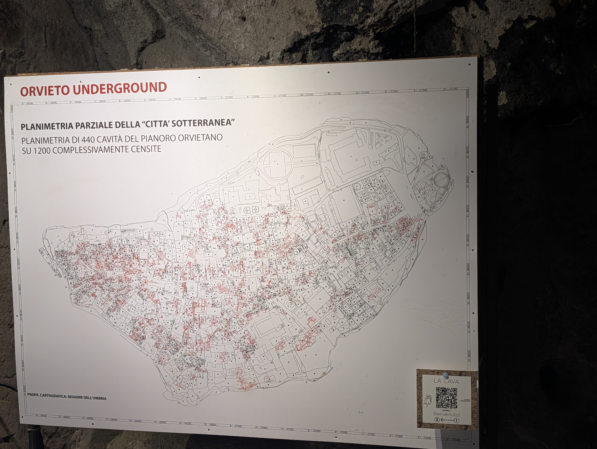
Duomo di Orvieto · 15h09
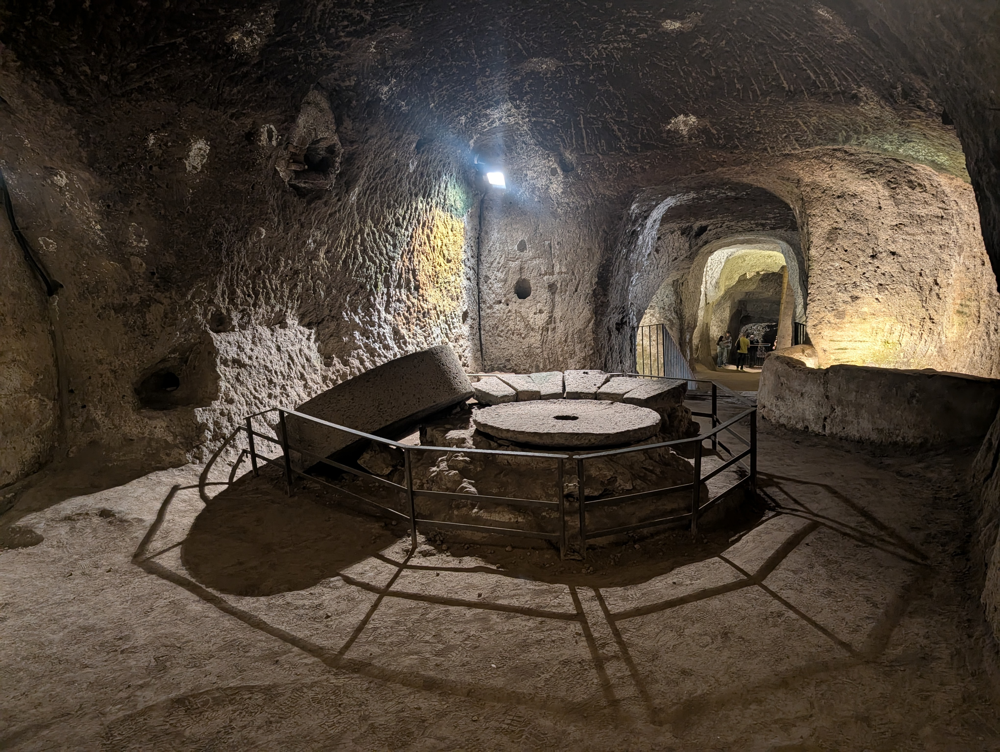
"a primeira igreja listrada" · 15h15
JOÃOA gente foi no Museu Etrusco, que é horrível. Muito ruim. Não vale nem 10 segundos. Foi de graça porque a gente já tinha pagado pra entrar na catedral, e estava incluso. Por isso que alguém entra — porque é incluso.
Volta pra Roma
JOÃOVoltamos de trem, de boa. Descobrimos até mais de boa do que a gente achava — ninguém viu nosso ticket, dava pra nem ter pagado. Mas pagamos. Acontece.
JOÃO(Aliás, parêntese: a gente teve emoções com o vinho de Orvieto. Comprou duas garrafas, e na hora do trem lembrou que não tinha como abrir. Foi correndo pro mercadinho, e o cara não queria abrir porque a gente não tinha comprado a garrafa lá. Mas deu certo. E entramos no trem correndo pra caramba.)
500 mil cristãos embaixo do chão, e duas Lime no meio do nada
JOÃOEra 1º de maio. Dia do Trabalhador. Feriado.
JOÃOA gente acordou cedo, tomou café, e foi. Chegou às 9 em ponto na loja de bike. Pra descobrir que não tinha bike.
JOÃOUma das duas pessoas que gravam este áudio esqueceu de reservar a bicicleta. Não vai ser identificado quem, por questões de privacidade.
FERNANDATudo reservado.
Catacumbas de São Calisto
JOÃOA gente tinha reservado um tour no underground de San Callisto. Foi sem bike mesmo. Muito legal. Valeu a pena. Bem bonito também por fora.
FERNANDAFoi com um cara que não falava inglês muito bem.
JOÃOO cara tinha duas coisas que precisava saber: falar inglês e ter informação. Mas não sabia falar inglês.
FERNANDATem gente morta embaixo do negócio.
JOÃO500 mil.
FERNANDA500 mil cristãos. E vários papas.
JOÃONa época, o papa era de boa. Era só um brother.
Bike da Lime na Via Appia
JOÃOTerminamos o tour. E aí fizemos uma coisa muito inovadora: pegar bike pelo app da Lime.
FERNANDANão recomendo.
JOÃOTentamos uma segunda loja antes, andamos um pouco para fora da Via Appia. Conseguimos pegar duas bicicletas elétricas da Lime.
FERNANDASó nós dois levamos bike Lime na Via Appia. As outras pessoas estavam com bikes de mountain bike profissionais.
JOÃOAté aí, tudo bem. Estava dando certo. Quando chegamos mais ou menos na metade da Via Appia, fomos surpreendidos pelo fato de que a bike parou de acelerar. O motor elétrico desligou.
FERNANDAEla ficou super pesada.
JOÃOA gente descobriu que estava numa área que não podia andar com ela. Embora ainda fosse parte da Via Appia.
FERNANDAA gente saiu da Via Appia, foi no meio da rodovia lateral, até uma via expressa. Parecia a Linha Amarela. Eu morrendo de medo de "meu Deus, a gente vai parar numa rodovia".
JOÃOAndamos uns 200 metros em uma rodovia mais rápida ali. Mas foi bem curto e bem de boa.
Almoço e expressos
JOÃOAí a gente parou a bicicleta dentro do restaurante — o que não pode. Foi uma celeuma com a Lime, porque não conseguia pausar nem encerrar a corrida. PS - três semanas depois eu ainda tô brigando com eles por email porque me cobraram 80 euros indevidamente!
FERNANDANão tinha turista.
JOÃONenhum turista — só a gente. E não tinha colher, como em todos os restaurantes de Roma que a gente foi. Comida bem gostosa. Valeu a pena, eu estava com muita fome. Restaurante mais italiano que a gente foi.
FERNANDAA gente tomou o primeiro expresso no restaurante, pra dar um gás pra corrida.
JOÃODepois conseguimos tirar a bike de lá, desbloquear de novo, botar num lugar mais seguro. E voltamos pra Via Appia.
JOÃOA gente acabou andando por um lugar bem curioso, um pouco ilegal — começou a soar um alarme por causa de uma câmera. Imagino que via que a gente estava indo para propriedade privada. Voltamos.
Restaurante na Via Appia · 14h52
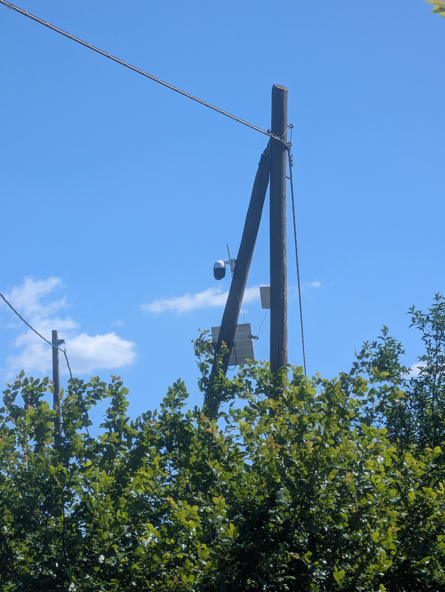
14h55
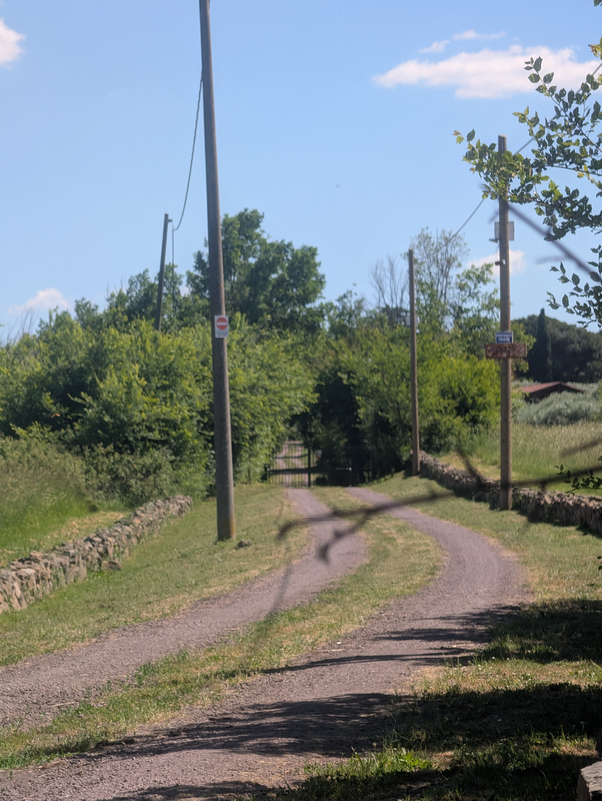
14h56
FERNANDAA gente andamos no meio de um campo. Parecia que estávamos fazendo uma trilha.
JOÃOAchamos um lugar muito gostoso de drinques e comidinhas na beirada da Via Appia. Bem agradável.
FERNANDAEra tipo um food truckzinho com bebidas. Sol da tarde maravilhoso, sem uma nuvem no céu. Umas famílias, crianças, uma cama elástica pras crianças. Todo mundo embaixo de tendas, bebendo, comendo, conversando. Uma vibe muito de boa, tranquila, agradável.
JOÃOTomamos mais um expresso aí.
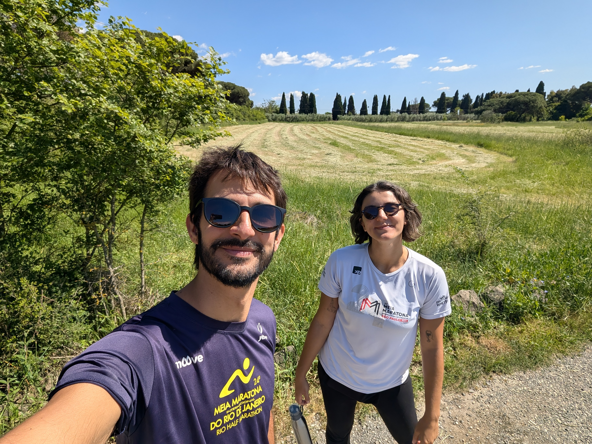
Food truck na Via Appia · 15h10
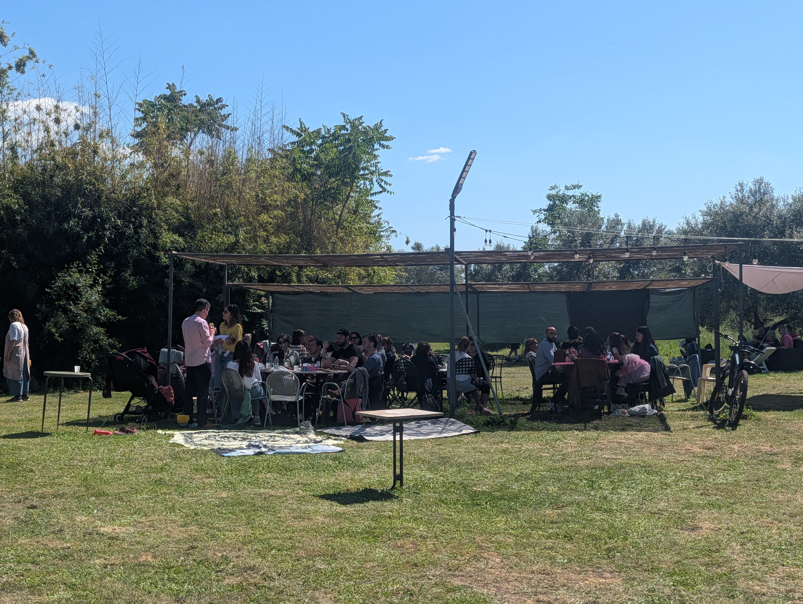
"vibe muito de boa" · 15h14
Corrida de volta
FERNANDAA gente bebeu na praça. Não, calma, foi várias coisas que aconteceram.
JOÃOCom dois expressos e um sonho, e sem bike, fomos correndo de volta pro hotel.
FERNANDAA gente parou num clube no caminho.
JOÃOPra pegar água e ir no banheiro. Completamente inesperado — um clube tipo Clube Pinheiros no meio da Via Appia. A Via Appia é bem utilizada, na verdade. Não é só uma coisa velha.
JOÃOA gente voltou correndo o tempo inteiro até o hotel. Deu uns belos quilômetros — 14 por aí. Passamos no Circo Máximo depois de terminar toda a Via Appia. Refizemos o mesmo trajeto da corrida de quarta pra chegar em casa.
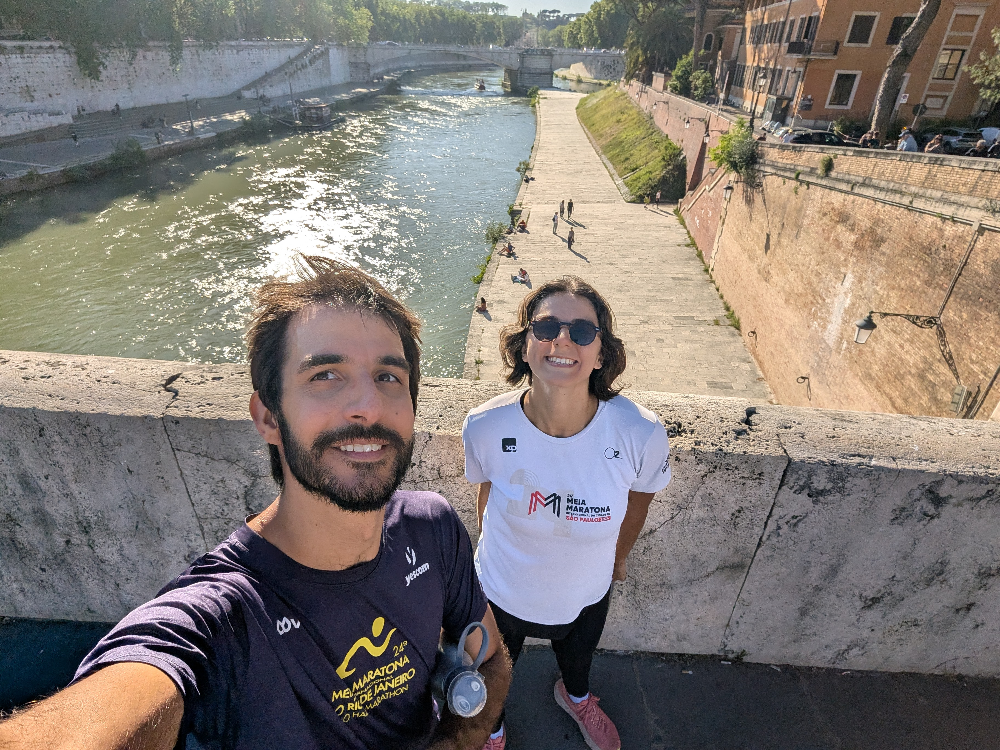
Trastevere · de volta da corrida · 17h43
Jantar
JOÃOEstávamos mortos de fome. Comi dois pratos dessa vez — primo e secondo. Única vez que fiz isso. Massa e depois a proteína. Perfeito. Muito gostoso. Em Trastevere mesmo, porque a gente queria comer logo. Esqueci o nome do restaurante.
FERNANDAE nesse dia a gente comeu gelato. Pistache. Muito gostoso.
Hadriano e Antínoo, a missa de 1.400 anos, e um show de fogo na ponte
JOÃOHoje a gente acordou cedinho, pegou um trem na Tiburtina, e foi pra Tivoli.
Saída cedo · Tiburtina · 08h22
Villa Adriana
JOÃOFomos na Villa Adriana de manhã. Bom de ruína.
FERNANDAEra o palácio do Adriano. O Adriano estava de saco cheio da cidade grande, queria fazer o palácio dele separado da galera.
JOÃOQuem nunca, né?
FERNANDAGigante. Sala de banho gigantesca, quartos. Muito doido.
FERNANDAE uma piscina — vou chamar de piscina, mas não é piscina — que ele fez só pro namorado dele, que morreu no rio Nilo. Sendo que ele tinha uma esposa.
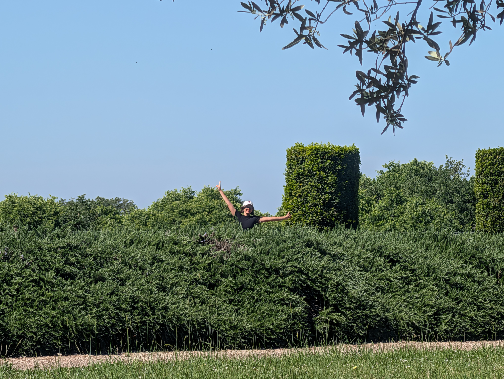
Villa Adriana · 10h23
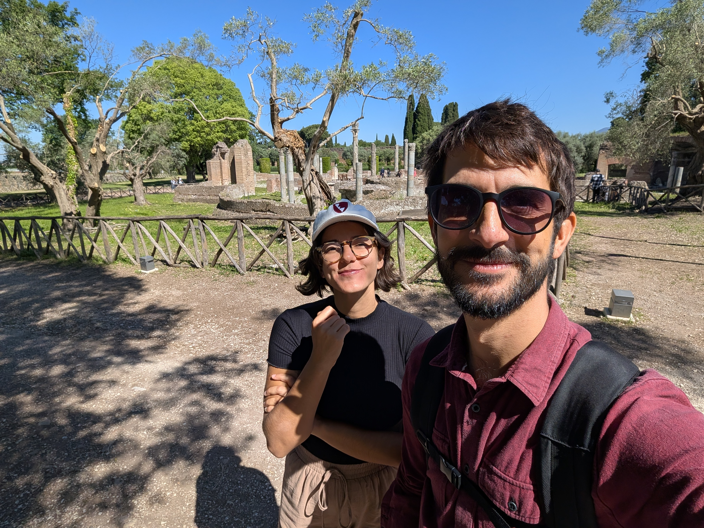
Canopo · 10h37
O rapaz que afogou no Nilo chamava-se Antínoo, um jovem da Bitínia (atual Turquia) que Hadriano conheceu por volta de 123 d.C., com cerca de 13 anos (!!!) de idade. Tornou-se companheiro constante do imperador por sete anos. Quando morreu afogado no Nilo em 130 d.C. — nas circunstâncias nunca esclarecidas de acidente, suicídio ou sacrifício ritual — Hadriano reagiu com um luto que chocou Roma: declarou Antínoo um deus, fundou uma cidade egípcia no local da morte (Antinoopolis), mandou espalhar estátuas dele por todo o império (sobrevivem mais retratos de Antínoo do que de qualquer pessoa da Antiguidade exceto Augusto e o próprio Hadriano) e deu o nome dele a uma estrela. A deificação de um particular — não um membro da família imperial, não um general, apenas um jovem belo que o imperador amava — foi sem precedentes e escândalosa para os padrões romanos. É um dos gestos mais reveladores de qualquer imperador romano: um homem que usou toda a maquinaria do poder imperial para processar uma perda privada em escala cósmica. A piscina que Fernanda chamou de piscina — o Canopo, o longo espelho d'água que percorremos — foi de fato construída por Hadriano como homenagem a Antínoo e à sua viagem ao Egito. As esculturas que marginavam a água, hoje desaparecidas ou em museus, incluíam representações do próprio Antínoo na forma de divindades egípcias.
Durante a caminhada pelas ruínas, usamos fotos para perguntar ao Gemini sobre os detalhes do local. Aprendemos que a Villa Adriana operava como duas cidades completamente separadas: a visível, com o Teatro Marítimo onde o imperador se isolava, e a invisível, formada por túneis subterrâneos (Cryptoporticus) onde milhares de trabalhadores mantinham as enormes fornalhas acesas para aquecer as piscinas. Fotografamos a base de uma parede e aprendemos sobre o opus reticulatum (os tijolos assentados na diagonal para distribuir o peso) e vimos blocos modernos marcados com "R 2006", carimbados de propósito por arqueólogos para sinalizar o que era restauro moderno. Vimos também os domos que Adriano desenhou para se vingar do arquiteto Apolodoro e o longo espelho d'água do Canopo, onde a elite romana realizava banquetes falando grego, que era o verdadeiro símbolo de status da época. Terminamos a visita no Antiquarium, onde descobrimos que as estátuas expostas ali são as ruínas "menos perfeitas" ou fragmentos; as obras-primas verdadeiras foram levadas para museus com forte segurança.
Villa d'Este
JOÃODa Villa Adriana fomos direto pra Villa d'Este, de ônibus. Um pouco rolê — não é muito fácil se locomover pela cidade.
FERNANDADe carro parece bem mais fácil.
JOÃODe carro teria sido mais simples. Porém não tínhamos carro, porque nenhum de nós tinha CNH física na Itália. O plano original, inclusive, era pegar carro pra ir pra Orvieto.
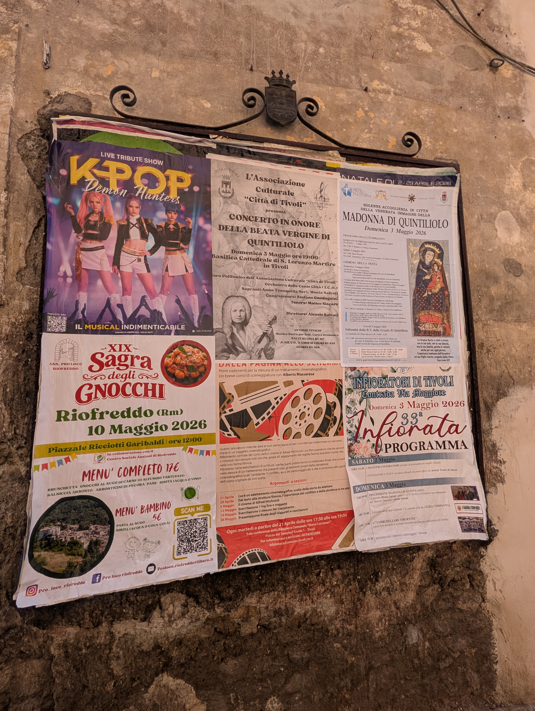
Villa d'Este · Tivoli · 14h21
JOÃOA Villa d'Este foi legalzinha. Mas a gente não conseguiu ver o chafariz famosinho do órgão — ele acabou assim que a gente entrou, e a gente não sabia desse negócio. Parece bem legal no YouTube.
JOÃOThe downside of AI. O Gemini idiota não avisou a gente.
Logo depois disso o Gemini explicou que a Fonte do Órgão e a Fonte da Coruja tocam a cada duas horas em horários super rígidos (12:30, 14:30...) e funcionam 100% à base da gravidade do rio e da pressão do ar, sem usar nenhuma gota de eletricidade. Pelo menos aproveitamos para passear pela Avenida das Cem Fontes e pela 'Rometta' (uma mini maquete de Roma), que descobrimos ter sido construída pelo Cardeal Ippolito d'Este como uma espécie de vingança e delírio de grandeza por ter sido exilado na colina após perder a eleição para se tornar Papa.
JOÃOA gente saiu de lá relativamente rápido. Achei a Villa Adriana bem mais legal.
FERNANDATambém, já era a milésima coisa que a gente visitava, né?
JOÃOChega de papas.
Almoço em Tivoli
JOÃOAlmoçamos gostoso. Tem muito lugar pra comer em Tivoli — ruazinhas pequenas, sem carro. Tomamos sorvete.
FERNANDAMuito bom. Sorvete gigante. Pistache e chocolate branco.
JOÃOVoltamos pro trem. Capotei o caminho inteiro de volta. Estamos exaustos.
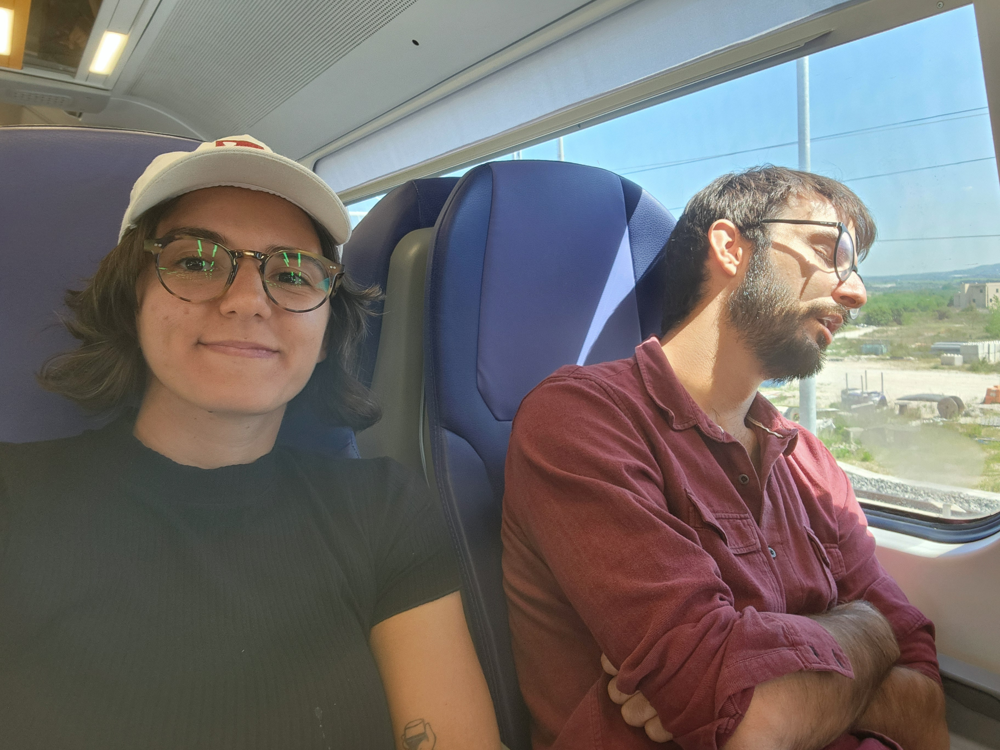
Tivoli · a caminho do almoço · 15h05
Missa no Panteão
JOÃOPegamos o metrô da Tiburtina pra Termini, de Termini pra Barberini. De lá caminhamos passando por multidões absolutamente insuportáveis perto da Fontana di Trevi — onde a gente já tinha ido um desses dias, e foi bem desprezível, porque cheio de gente, não dá nem para respirar.
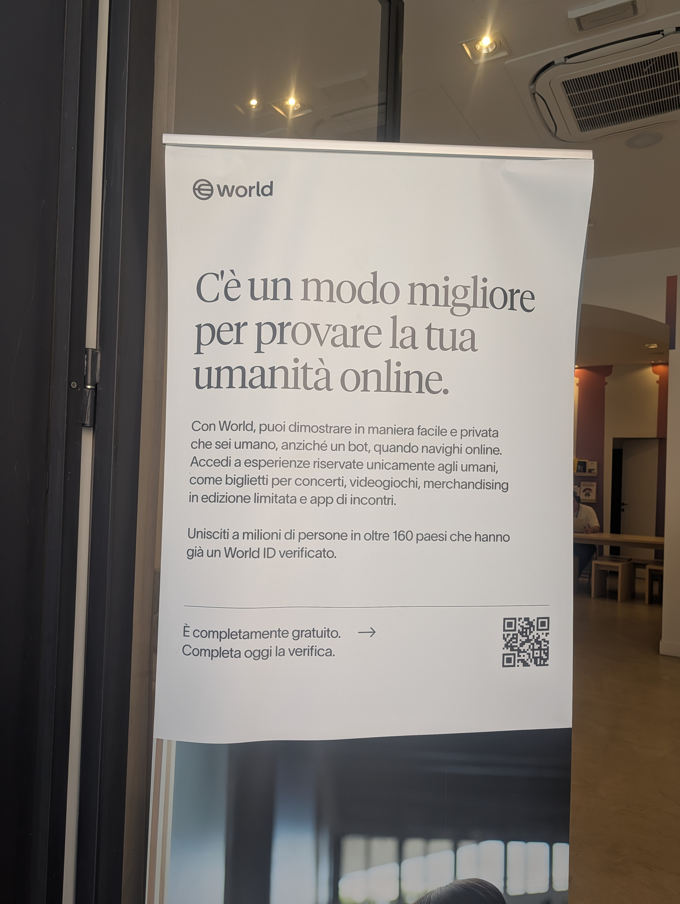
Fontana di Trevi · "multidões absolutamente insuportáveis" · 16h12
Bem no meio desse caminho insuportável até o Panteão, a gente se deparou com um pôster super moderno escrito "C'è un modo migliore per provare la tua umanità online" e mandou a foto para o IA. Descobrimos que era um anúncio da World (antiga Worldcoin), aquele projeto de cripto do Sam Altman, o criador da OpenAI. Eles usam uma esfera metálica (o "Orb") para escanear a íris das pessoas para garantir que os usuários são humanos reais, e não bots de inteligência artificial. Muito bizarro de se ver logo depois de caminhar por fontes renascentistas.
FERNANDAÉ bonita. Mas muita gente.
JOÃOVocê não consegue nem vê-la direito, de tantos seres humanos.
JOÃOFomos pro Panteão, porque eu estava com muita vontade de ver uma missa lá. E deu pra entrar — quase não deu, eles não queriam deixar a gente entrar. Provavelmente pra separar turistas dos poucos que realmente foram pra ver a missa. Mas conseguimos.
Aqui o Gemini salvou. Antes de entrarmos, ele nos ensinou exatamente o que falar para o guarda nos liberar: "Sono qui per la messa". Estar com os ombros e os joelhos cobertos, seguindo o rígido código de vestimenta deles, também foi crucial. Aprendemos que essa missa acontece debaixo daquele domo há mais de 1.400 anos, porque o prédio sobreviveu aos saques apenas porque foi transformado na Basílica de Santa Maria ad Martyres no ano de 609!
JOÃODurou uma hora, mais ou menos. Bem legal. Tinha um monte de templários dentro da missa — tem algumas fotos disso. Bem interessante.
Panteão · missa com templários · 18h20
JOÃOE eu achei muito legal porque tem missas acontecendo lá desde o ano 600. Um ritual muito, muito duradouro, que acontece até hoje. A gente pôde participar e viver mais o Panteão do que só na visita do primeiro dia.
FERNANDA. Eles já fizeram isso há 1.400 anos.
Realmente sofremos um pouco para pegar o ritmo de quando ajoelhar, sentar ou levantar durante a cerimônia, mas pelo menos acertamos na hora de apertar a mão dos italianos ao redor e desejar "La pace sia con te".
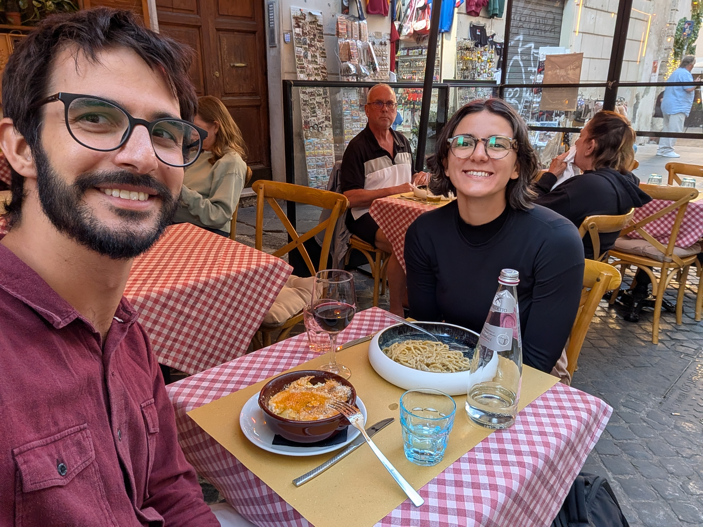
Piazza Navona · de volta a Trastevere · 19h14
Jantar final
JOÃOJantamos no nosso restaurante número 1 em Trastevere. Delicinha. Lasanha.
FERNANDAMuito bom.
JOÃOUm vinhozinho tinto. E voltamos pra casa, passamos um tempo na ponte — que estava linda. A ponte que só passa pedestre. Fim da tarde, sol se pondo, banda tocando ao vivo, e depois um breve espetáculo de uns três caras fazendo malabarismos com fogo e pirotecnia.